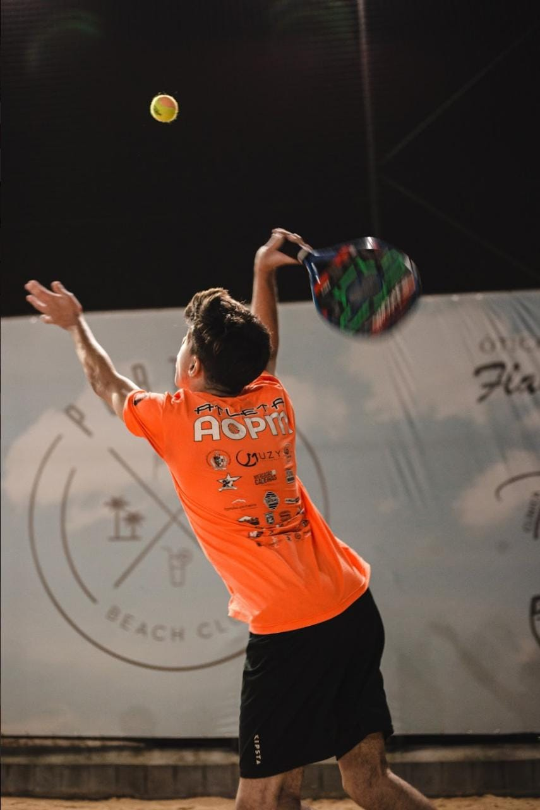

Inicio
Comecei a jogar beach tennis por volta do começo de 2019, quando tinha acabado de me tornar sócio de um clube.
Nesse clube, haviam acabado de criar novas quadras de beach tennis. Mesmo sendo um esporte novo, ele despertou minha
curiosidade e me fez começar a praticá-lo. Desde o começo,
diziam que eu talvez tivesse um futuro no esporte devido à minha pouca idade e ao fato de já jogar bem na época.

Volta
Voltei a jogar no início de 2021, por conta da pandemia, e percebi que o esporte já havia evoluído muito.
As pessoas acabaram treinando e se aprimorando durante a pandemia, e isso foi bom para mim,
pois me incentivou a jogar mais, melhorar a cada dia e me tornar, aos poucos, um jogador melhor.

Podiums
Durante meu curto tempo no competitivo de beach tennis, tive algumas conquistas e derrotas marcantes,
que me fizeram, por várias vezes, ter vontade de desistir. No entanto, essas experiências me tornaram
cada vez mais forte e melhor. Minhas maiores conquistas foram em campeonatos internos,
e embora nunca tenha tido muita expressão jogando campeonatos externos, acabei conquistando alguns títulos.

Inicio
Comecei a jogar beach tennis por volta do começo de 2019, quando tinha acabado de me tornar sócio de um clube. Nesse clube, haviam acabado de criar novas quadras de beach tennis. Mesmo sendo um esporte novo, ele despertou minha curiosidade e me fez começar a praticá-lo. Desde o começo, diziam que eu talvez tivesse um futuro no esporte devido à minha pouca idade e ao fato de já jogar bem na época.
Volta
Voltei a jogar no início de 2021, por conta da pandemia, e percebi que o esporte já havia evoluído muito. As pessoas acabaram treinando e se aprimorando durante a pandemia, e isso foi bom para mim, pois me incentivou a jogar mais, melhorar a cada dia e me tornar, aos poucos, um jogador melhor.
Podiums
Durante meu curto tempo no competitivo de beach tennis, tive algumas conquistas e derrotas marcantes, que me fizeram, por várias vezes, ter vontade de desistir. No entanto, essas experiências me tornaram cada vez mais forte e melhor. Minhas maiores conquistas foram em campeonatos internos, e embora nunca tenha tido muita expressão jogando campeonatos externos, acabei conquistando alguns títulos.